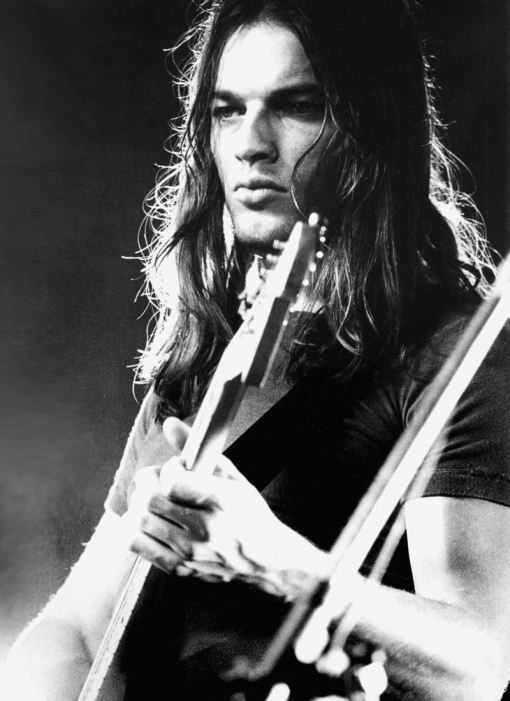

David Gilmour

David Jon Gilmour, CBE (Cambridge, 6 de março de 1946)[1] é um guitarrista, baixista, saxofonista, compositor e cantor britânico, guitarrista e vocalista da banda inglesa Pink Floyd, tendo também editado álbuns solo bem como colaborado com outros artistas. Depois da saída de Roger Waters em meados da década de 1980 tornou-se a principal figura da banda. Gilmour é profusamente considerado como um dos maiores e mais influentes guitarristas de todos os tempos; pela sua técnica e timbre de grande diferencial e destaque, foi considerado o 6° melhor guitarrista de todos os tempos pela revista americana Guitar World, o 14º melhor guitarrista do mundo pela revista americana Rolling Stone,[2] e o 36º melhor vocalista do rock pelo programa de rádio britânico Planet Rock.